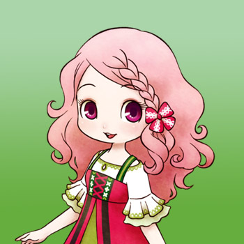
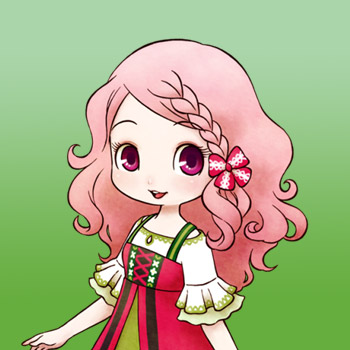

Popuri

 

Popuri vive en la granja avícola con su madre, Lillia, y su hermano mayor, Rick. Le encantan las gallinas y ayuda con la tienda de la granja cuando puede. Tiene una personalidad alegre y un espíritu fuerte, pero puede actuar como una niña de vez en cuando. Jugará con los otros dos niños de la ciudad y participará en el Festival de la Calabaza para niños.
Su horario de domingo con clima soleado cambia cuando el guapo Kai viene de visita durante el verano. Pasará el día dentro de su casa hasta la 1:00 pm, cuando irá a la playa a pasar el rato con Kai hasta las 4:00 pm Luego regresa a la casa.
Si te casas con Popuri, ella visitará la granja avícola de 9:00 am a 5:00 pm. Los domingos se quedará en casa todo el día.
| Cumpleaños | Verano 3 (primaria) o Verano 10 (alternativa) |
|---|
| Amistad extra | Gana +2500 cuando tus gallinas tengan un promedio de 150 (6 corazones), 180, 210, 230 y 250 puntos (10 corazones) de cariño. |
|---|
| Rival | Kai |
|---|
| Horario |
- El horario de Popuri es el mismo de lunes a sábado. En los días soleados, se dirige a las aguas termales por la mañana, luego regresa a la granja avícola a las 11:00 am y permanece allí todo el día.
- En los días de lluvia o nieve se quedará en casa todo el día. Los domingos, cuando la granja está cerrada, va a la iglesia de 9:00 am a 1:00 pm, luego visita Rose Plaza hasta las 4:00 pm y luego regresa a casa.
- Los domingos lluviosos o nevados, se saltará su visita a Rose Plaza y en su lugar se quedará en la iglesia de 9:00 am a 4:00 pm.
|
|---|
Popuri cuenta con un evento especial y lo puedes consultar en evento aleatorio.
Preferencias de regalos
La mejor forma de mejorar la amistad y el afecto es siempre regalar las cosas que le gusta una vez por dia.
Eventos del corazón
Cada evento que ocurra el jugador tendra que escoger entre dos respuesta en la que uno ayuda a conseguir muchos puntos y la otra suele ser neutral o quitar puntos.
Cuando el candidato tenga corazón naranja puedes proponerle matrimonio con la pluma azul y despues de la boda tendra un corazón rojo.
Evento de Introducción
| Corazón | Requisitos | Mejor espuesta |
|---|
|
- Salir de la Forja de Saibara
- Puede ser Lunes o Miercoles.
- 11:20 am a 6:00 pm
- Debe ser soleado
|
Opción 1: ¡Sí!, ¿Quién no?. |
Evento del Corazón Negro
| Corazón | Requisitos | Mejor respuesta |
|---|
|
- Sal de tu casa de campo.
- No debe ser Domingo.
- 6:00 am a 12:00 pm
- Debe ser soleado
- Has visto el evento de Introducción
- Popuri tiene un color de corazón negro (5.000 LP) o superior.
|
Opción 2: Claro. Mira y aprende. |
Evento del Corazón Púrpura
| Corazón | Requisitos | Mejor respuesta |
|---|
|
- Entra a la iglesia
- Puede ser Domingo.
- 10:00 am a 1:00 pm
- Debe ser soleado
- No debe ser Verano
- Tener un espacio vacío para objetos en tu mochila.
- Has visto el evento de corazón negro
- Popuri tiene un color de corazón púrpura (10.000 LP) o superior.
|
Opción 1: Como dicen, "Todo trabajo y nada de juego..." |
Evento del Corazón Azul
| Corazón | Requisitos | Mejor respuesta |
|---|
|
- Entra en la tienda de la granja avícola.
- No debe ser Domingo ni Marte.
- 11:30 a 13:00
- No debe ser Verano
- Debe ser soleado
- Tener un espacio vacío para objetos en tu mochila.
- Has visto el evento de corazón púrpura
- Popuri tiene un color de corazón azul (20.000 LP) o superior.
|
Opción 3: Ustedes dos están molestando a Lillia. |
Evento del Corazón Amarillo
| Corazón | Requisitos | Mejor respuesta |
|---|
|
- Sal de tu casa de campo
- Cualquier día de la semana.
- 10:00 am a 1:00 pm
- Debe ser soleado
- Tener un espacio vacío para objetos en tu mochila.
- Has visto el evento de corazón azul
- Le has regalado a Popuri una flor preservada.
- Popuri tiene un color de corazón amarillo (40.000 LP) o superior.
|
Opción 1: Parece sorprendentemente decente. |
Evento del Corazón Naranja
| Corazón | Requisitos | Mejor respuesta |
|---|
|
- Salir de la Forja de Saibara
- No debe ser Jueves.
- 10:00 am a 1:00 pm
- Debe ser soleado
- Has visto el evento de corazón amarillo
- Popuri tiene un color de corazón naranja (50.000 LP) o superior.
|
Opción 2: La linda Popuri es buena. Ella puede colgar. |